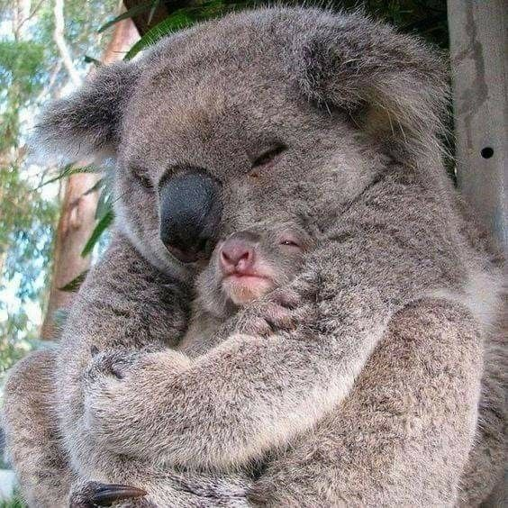

COALAS
apresentam uma pelagem com coloração que varia entre o acinzentado e o castanho, podem chegar a cerca de 85 centímetros de comprimento e pesar até cerca de 13 quilos
Os coalas machos apresentam expectativa de vida na natureza de cerca de 12 anos, enquanto as fêmeas vivem, em média, 15 anos.
Os coalas, que são animais herbívoros, alimentam-se de folhas de eucalipto e, ocasionalmente, de folhas de outras plantas.
O nome coala significa “animal que não bebe” e é uma referência ao fato de que os coalas retiram a água de que necessitam das folhas de que se alimentam.

os coalas estão ameaçados de extinção por conta da destruíção de seu habitat.